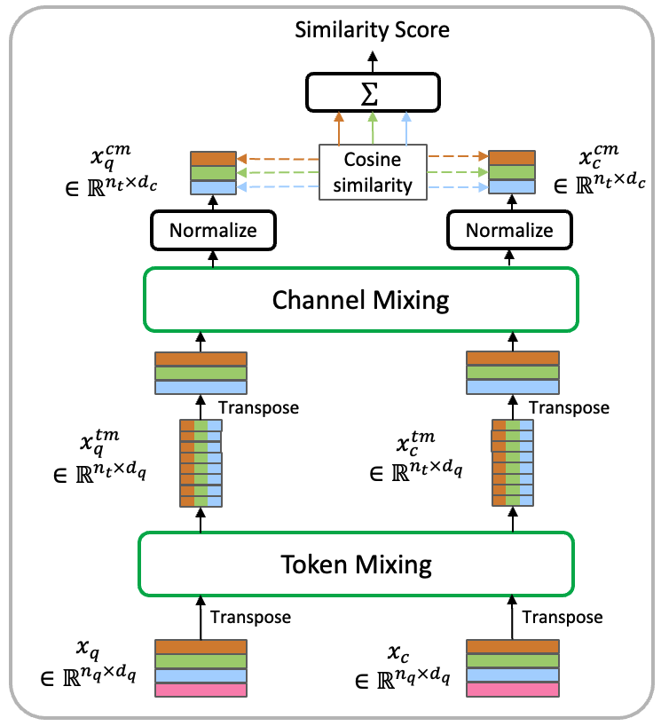
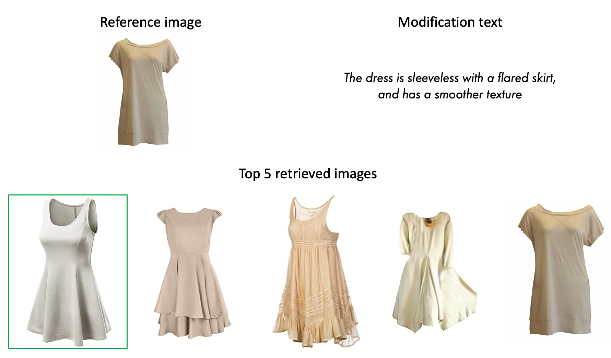

Our dataset FACap consists of 227,680 (reference image, modification text, target image) triplets which can be used to train a model on the CIR task in the fashion domain. The image pairs are built from existing fashion datasets, and the modification texts are generated with a custom pipeline using a large vision-language model and a large language model.
FashionBLIP-2 - Method
Global pipeline
The input images are encoded using a pre-trained image encoder with adapter modules, and further processed by a Q-Former module. The similarity between the two obtained representations is computed using our specific matching module (see details on the right).
Matching module
The number of tokens and token dimensionality is reduced by token mixing and channel mixing (respectively). The final similarity score is the sum of the cosine similarity for each paired vector.
Qualitative results
Note: for each query, the ground-truth target image is framed in green.
On the Fashion IQ dataset

On the enhFashionIQ dataset
